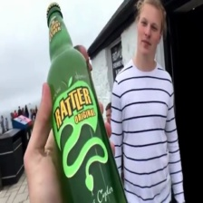
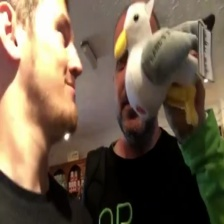
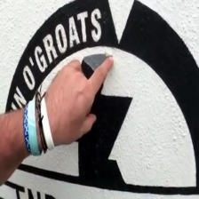
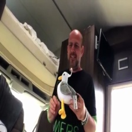
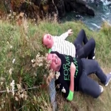
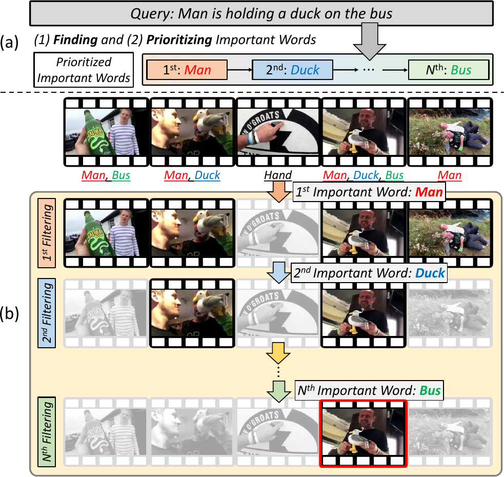
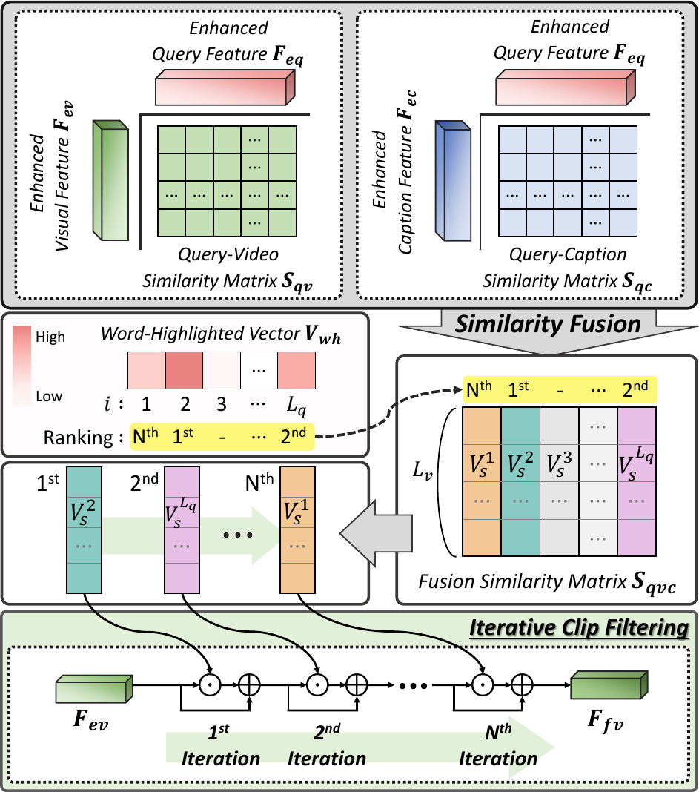
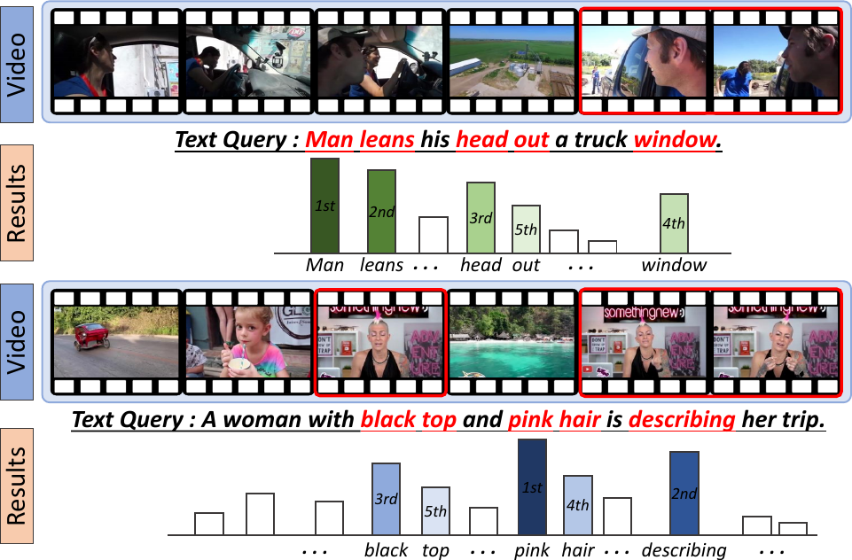

People read a query by picking out its key words first. We do the same for video: rank the important words in the query, then filter clips word by word with the help of MLLM scene captions, which improves moment retrieval and highlight detection on QVHighlights, Charades-STA, and TVSum.
Abstract
Video moment retrieval (MR) and highlight detection (HD) with natural language queries aim to localize relevant moments and key highlights in video clips. However, existing methods overlook the importance of individual words, treating the entire text query and video clips as a black box, which hinders contextual understanding.
We propose a novel approach that enables fine-grained clip filtering by identifying and prioritizing important words in the query. Our method integrates image-text scene understanding through Multimodal Large Language Models (MLLMs) and enhances the semantic understanding of video clips. We introduce a feature enhancement module (FEM) to capture important words from the query and a ranking-based filtering module (RFM) to iteratively refine video clips based on their relevance to these important words. Extensive experiments demonstrate that our approach significantly outperforms existing state-of-the-art methods, achieving superior performance in both MR and HD tasks.
01Motivation
Read the query the way people do
People pick out the key words of a query and rank them before searching a video. Existing MR/HD models treat the query and the clips as a black box. We rank the important words, then filter clips one word at a time.
QueryMan is holding a duck on the bus





Concept figure (Fig. 1) from the paper

02Method
Method
Step through the architecture, then look inside the ranking-based filtering module.
Architecture figure (Fig. 2) from the paper

Inside the ranking-based filtering module
RFM figure (Fig. 3) from the paper

03Results
Results
Pick a benchmark to see the full comparison.
| Moment retrieval | Highlight detection | ||||||
|---|---|---|---|---|---|---|---|
| Method | R1@0.5 | R1@0.7 | mAP@0.5 | mAP@0.75 | mAP avg | mAP | HIT@1 |
| Moment-DETRNeurIPS’21 | 52.89 | 33.02 | 54.82 | 29.40 | 30.73 | 35.69 | 55.60 |
| QD-DETRCVPR’23 | 62.40 | 44.98 | 62.52 | 39.88 | 39.86 | 38.94 | 62.40 |
| UniVTGICCV’23 | 58.86 | 40.86 | 57.60 | 35.59 | 35.47 | 38.20 | 60.96 |
| TR-DETRAAAI’24 | 64.66 | 48.96 | 63.98 | 43.73 | 42.62 | 39.91 | 63.42 |
| UVCOMCVPR’24 | 63.55 | 47.47 | 63.37 | 42.67 | 43.18 | 39.74 | 64.20 |
| Keyword-DETRAAAI’25 | 66.86 | 51.23 | 67.73 | 46.24 | 45.69 | 40.94 | 64.79 |
| Ours | 68.09 | 52.20 | 67.81 | 46.74 | 46.54 | 42.24 | 68.22 |
| Moment retrieval | Highlight detection | ||||||
|---|---|---|---|---|---|---|---|
| Method | R1@0.5 | R1@0.7 | mAP@0.5 | mAP@0.75 | mAP avg | mAP | HIT@1 |
| UMTCVPR’22 | 56.23 | 41.18 | 53.38 | 37.01 | 36.12 | 38.18 | 59.99 |
| QD-DETRCVPR’23 | 63.06 | 45.10 | 63.04 | 40.10 | 40.19 | 39.04 | 62.87 |
| TR-DETRAAAI’24 | 65.05 | 47.67 | 64.87 | 42.98 | 43.10 | 39.90 | 63.88 |
| UVCOMCVPR’24 | 63.81 | 48.70 | 64.47 | 44.01 | 43.27 | 39.79 | 64.79 |
| Keyword-DETRAAAI’25 | 67.77 | 50.52 | 68.30 | 45.88 | 45.52 | 41.15 | 65.82 |
| Ours | 68.87 | 52.27 | 68.09 | 46.55 | 46.23 | 42.36 | 69.78 |
VGG features
| Method | R1@0.5 | R1@0.7 |
|---|---|---|
| UMT†CVPR’22 | 48.31 | 29.25 |
| QD-DETRCVPR’23 | 52.77 | 31.13 |
| TR-DETRAAAI’24 | 53.47 | 30.81 |
| TaskWeaveCVPR’24 | 56.51 | 33.66 |
| Keyword-DETRAAAI’25 | 54.89 | 31.97 |
| Ours | 61.51 | 37.58 |
SlowFast + CLIP features
| Method | R1@0.5 | R1@0.7 |
|---|---|---|
| QD-DETRCVPR’23 | 57.31 | 32.55 |
| UniVTGICCV’23 | 58.01 | 35.65 |
| TR-DETRAAAI’24 | 57.61 | 33.52 |
| UVCOMCVPR’24 | 59.25 | 36.64 |
| Keyword-DETRAAAI’25 | 61.08 | 37.89 |
| Ours | 60.97 | 38.52 |
| Method | VT | VU | GA | MS | PK | PR | FM | BK | BT | DS | Avg |
|---|---|---|---|---|---|---|---|---|---|---|---|
| LIM-SCVPR’19 | 55.9 | 42.9 | 61.2 | 54.0 | 60.3 | 47.5 | 43.2 | 66.3 | 69.1 | 62.6 | 56.3 |
| TrailerECCV’20 | 61.3 | 54.6 | 65.7 | 60.8 | 59.1 | 70.1 | 58.2 | 64.7 | 65.6 | 68.1 | 62.8 |
| SL-ModuleICCV’21 | 86.5 | 68.7 | 74.9 | 86.2 | 79.0 | 63.2 | 58.9 | 72.6 | 78.9 | 64.0 | 73.3 |
| UMT†CVPR’22 | 87.5 | 81.5 | 88.2 | 78.8 | 81.5 | 87.0 | 76.0 | 86.9 | 84.4 | 79.6 | 83.1 |
| QD-DETRCVPR’23 | 88.2 | 87.4 | 85.6 | 85.0 | 85.8 | 86.9 | 76.4 | 91.3 | 89.2 | 73.7 | 85.0 |
| UniVTGICCV’23 | 83.9 | 85.1 | 89.0 | 80.1 | 84.6 | 87.0 | 70.9 | 91.7 | 73.5 | 69.3 | 81.0 |
| TR-DETRAAAI’24 | 89.3 | 93.0 | 94.3 | 85.1 | 88.0 | 88.6 | 80.4 | 91.3 | 89.5 | 81.6 | 88.1 |
| UVCOMCVPR’24 | 87.6 | 91.6 | 91.4 | 86.7 | 86.9 | 86.9 | 76.9 | 92.3 | 87.4 | 75.6 | 86.3 |
| TaskWeaveCVPR’24 | 88.2 | 90.8 | 93.3 | 87.5 | 87.0 | 82.0 | 80.9 | 92.9 | 89.5 | 81.2 | 87.3 |
| Keyword-DETRAAAI’25 | 89.9 | 93.8 | 94.4 | 85.9 | 89.2 | 89.4 | 81.5 | 92.6 | 90.1 | 80.6 | 88.7 |
| Ours | 89.9 | 94.1 | 95.0 | 87.5 | 89.7 | 90.4 | 80.6 | 93.3 | 89.9 | 81.6 | 89.2 |
More experiments on QVHighlights val
Effect of each component
| Captions | FEM | RFM | R1@0.5 | R1@0.7 | mAP avg | HD mAP | HIT@1 |
|---|---|---|---|---|---|---|---|
| – | – | – | 66.13 | 49.74 | 43.24 | 40.11 | 64.77 |
| – | ✓ | – | 66.32 | 49.81 | 43.53 | 40.80 | 65.10 |
| – | – | ✓ | 67.55 | 49.61 | 44.38 | 41.29 | 65.81 |
| – | ✓ | ✓ | 69.42 | 51.81 | 45.56 | 41.32 | 66.06 |
| ✓ | – | – | 69.03 | 52.71 | 46.34 | 42.23 | 67.94 |
| ✓ | ✓ | – | 69.16 | 53.81 | 46.81 | 42.86 | 69.61 |
| ✓ | – | ✓ | 69.42 | 53.87 | 47.43 | 42.29 | 68.00 |
| ✓ | ✓ | ✓ | 70.00 | 55.68 | 48.14 | 43.24 | 71.23 |
Captions added to prior methods (InternVL2)
| Method | R1@0.5 | R1@0.7 | mAP avg | HD mAP | HIT@1 |
|---|---|---|---|---|---|
| TR-DETRAAAI’24 | 68.90 | 51.94 | 46.60 | 42.15 | 68.13 |
| UVCOMCVPR’24 | 68.71 | 53.23 | 47.68 | 41.95 | 68.32 |
| Keyword-DETRAAAI’25 | 68.32 | 53.35 | 47.73 | 41.97 | 69.55 |
| Ours | 70.00 | 55.68 | 48.14 | 43.24 | 71.23 |
Number of filtering iterations N
| N | R1@0.5 | R1@0.7 | mAP avg | HD mAP | HIT@1 |
|---|---|---|---|---|---|
| 0 | 69.16 | 53.81 | 46.81 | 42.86 | 69.61 |
| 1 | 69.48 | 54.13 | 47.10 | 42.91 | 70.06 |
| 3 | 69.74 | 54.45 | 47.30 | 42.98 | 70.90 |
| 5 | 70.00 | 55.68 | 48.14 | 43.24 | 71.23 |
| 7 | 70.00 | 53.87 | 47.09 | 42.76 | 69.29 |
MLLM used for captions
| MLLM | R1@0.5 | R1@0.7 | mAP avg | HD mAP | HIT@1 |
|---|---|---|---|---|---|
| LLaVA | 70.71 | 54.90 | 47.69 | 42.80 | 69.68 |
| InternVL2 | 70.00 | 55.68 | 48.14 | 43.24 | 71.23 |
04Qualitative
Qualitative results


Which words does the model rank first?
For “Man leans his head out a truck window”, the model ranks Man, leans, head, window, and out highest. It favors words tied to actions and objects, or strongly connected to the rest of the sentence, which are the words that help retrieve the right clips.
05Citation
BibTeX
@inproceedings{lee2026see,
title = {See, Rank, and Filter: Important Word-Aware Clip Filtering via Scene Understanding for Moment Retrieval and Highlight Detection},
author = {Lee, YuEun and Kim, Jung Uk},
booktitle = {Proceedings of the AAAI Conference on Artificial Intelligence},
volume = {40},
number = {8},
pages = {5936--5944},
year = {2026}
}